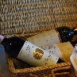
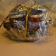
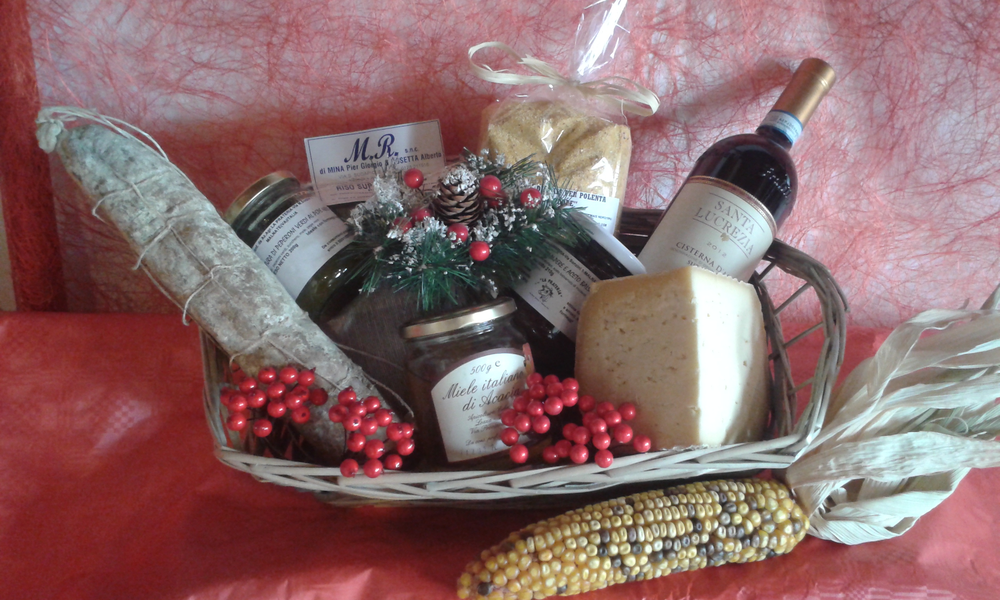

|
|
 |
Formaggi e salumi DOC
Un cesto profumato, che ricorda le cose buone di un tempo che fu. Sapori antichi, che ci parlano
di una qualità che credevamo persa, e che ci scalda il cuore durante le feste.
|
|  |
Chi non beve a Natale, è...
Lunghe ricerche in zone poco conosciute fanno scoprire le buone viti ed i loro prodotti migliori!
Metti qualche bottiglia nel tuo cesto regalo; farai un figurone. Garantito dalla PRATERIA!!
|
|  |
Dolcezze fuori stagione!!!
Che bello riscoprire i sapori dell'estate, mentre fuori magari nevica! Le nostre
confetture, prodotte artigianalmente con frutta biologica, sono in grado di restituirvi
sapori unici. Non mancano le combinazioni insolite, che danno ancora maggiori soddifazioni.
Non ti resta che provarle e regalarle agli amici più cari!!!
|
|
|
|  |
Natale, quando arriva arriva...
, Quale regalo può essere più gradito e sano di un cesto pieno di cose buone!!!
SI PREPARANO CESTI NATALIZI SU PRENOTAZIONE. CESTI A PARTIRE DA EU 10,00 CONTENENTI CONFETTURE
PER FORMAGGI, FORMAGGI, SALUMI, RISO, ORIGANO, VINO,
FARINA DI MAIS PER POLENTA ...E TANTI ALTRI PRODOTTI.
PER CHI VUOLE ANCHE CON CARNE SOTTOVUOTO!!!!
|
|
|
 |